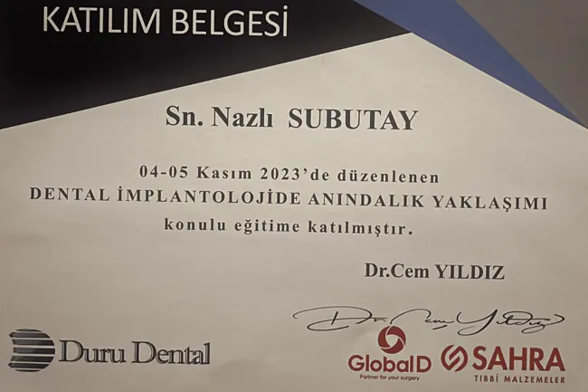
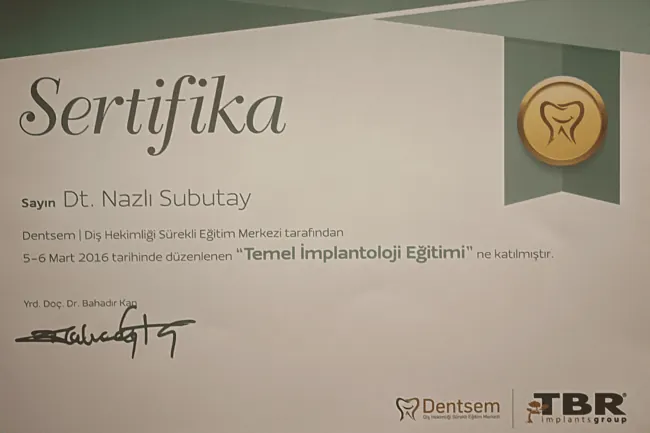
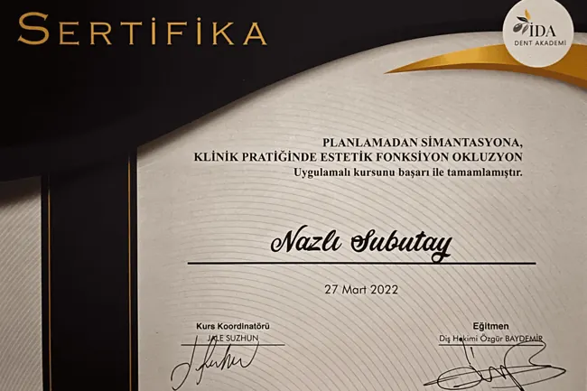
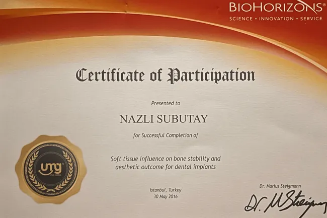

PROFESSIONAL BACKGROUND
Dentist Nazlı Subutay
After graduating from Yeditepe University Faculty of Dentistry in 2007, Nazlı Subutay began practicing dentistry at private healthcare institutions. Her professional interests include implantology, prosthetic treatment and aesthetic dental procedures.
2007Graduated from Yeditepe University Faculty of Dentistry

PROFESSIONAL INTERESTS
Areas of professional interest
The following are areas of professional interest, not specialist or academic titles.
Prosthetic treatments
Aesthetic dental procedures
COURSES & TRAINING
Continuing education
Courses and professional education activities provided by the dentist, grouped by year.
2024
- Implant-supported prostheses — Prof. Dr. Erhan Çömlekoğlu (24–25 February 2024)
- Soft tissue management in the peri-implant region — Dr. Hakan Begeç
- Case-based strategies based on the fundamentals of mucogingival surgery — Assoc. Prof. Dr. Mutlu Keskin
- Periodontal tissue preparation before aesthetic prosthetic procedures — Dr. Funda Özsarı
- Interpreting radiographs and tomography in endodontics through case examples — Assoc. Prof. Dr. Burçin Arıcan Alpay
- Anatomical shaping and clinical applications in endodontics through case examples — Dr. Emre Övsay
- Endodontic retreatment through case examples — Assoc. Prof. Dr. Ayfer Atav
- Digital orthodontic applications through case examples — Assoc. Prof. Dr. Kutalmış Büyük
- Digital approaches to implant-supported prosthetic planning through case examples — Dr. Dt. Gökçen Ateş
- Immediate loading protocol using photogrammetry and 3D printing in All-on-X cases — Dr. Dt. Mithat Terzi
2023
- Immediate approaches in dental implantology — Dr. Cem Yıldız (4–5 November 2023)
2022
- Surgical approach in the aesthetic zone: 3D planning strategies, occlusal material selection and occlusion in implant-supported prostheses — Prof. Dr. Selçuk Basa, Prof. Dr. Erhan Çömlekoğlu
- From Planning to Cementation: Aesthetic Function and Occlusion in Clinical Practice — Dentist Özgür Baydemir (27 March 2022)
2019
- Soft tissue management, prosthetic soft tissue development — Dr. Marius Steigmann
2016
- Porcelain Laminate Veneer Training — Doç. Dr. Ali Murat Kökat · Doç. Dr. Atila Ertan (26–27 March 2016)
- Basic Implantology Training — Yrd. Doç. Dr. Bahadır Kan (5–6 March 2016)
- Advanced Implant Training — Yrd. Doç. Dr. Bahadır Kan (1–2 April 2016)
- Soft Tissue Influence on Bone Stability and Aesthetic Outcome for Dental Implants — Dr. Marius Steigmann (30 May 2016)
Year not specified
- Implant surgery
- Advanced implant surgery
- Implant-supported prosthetic restorations
- Porcelain laminate veneer restorations
The education list is based on the supplied professional biography and certificate photos. Dates for courses without a certificate remain as provided.
CERTIFICATES
Training & participation certificates
Scanned certificates provided by the dentist. Select an image to enlarge and read the original document.

24–25 February 2024
Implant-Supported Prostheses
Artı Kurs Dijital Dental Eğitim Programı
Prof. Dr. Erhan Çömlekoğlu

26–27 March 2016
Porcelain Laminate Veneer Training
Dentsem — Diş Hekimliği Sürekli Eğitim Merkezi
Doç. Dr. Ali Murat Kökat · Doç. Dr. Atila Ertan

4–5 November 2023
Immediate Approaches in Dental Implantology
Duru Dental
Dr. Cem Yıldız

5–6 March 2016
Basic Implantology Training
Dentsem — Diş Hekimliği Sürekli Eğitim Merkezi
Yrd. Doç. Dr. Bahadır Kan

1–2 April 2016
Advanced Implant Training
Dentsem — Diş Hekimliği Sürekli Eğitim Merkezi
Yrd. Doç. Dr. Bahadır Kan

27 March 2022
From Planning to Cementation: Aesthetic Function and Occlusion in Clinical Practice
İDA Dent Akademi
Diş Hekimi Özgür Baydemir

30 May 2016
Soft Tissue Influence on Bone Stability and Aesthetic Outcome for Dental Implants
BioHorizons
Dr. Marius Steigmann
These documents record course attendance or completion; they do not establish a separate professional specialty title. Certificate images are provided by the dentist.